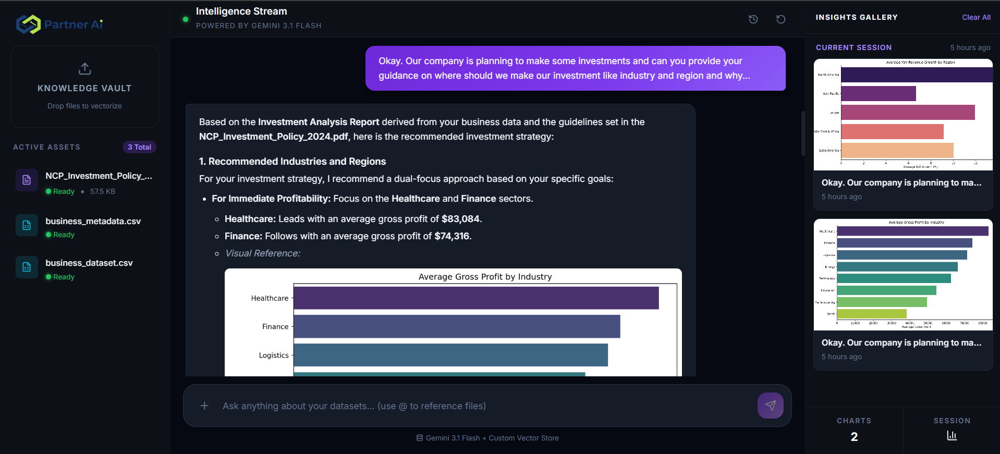
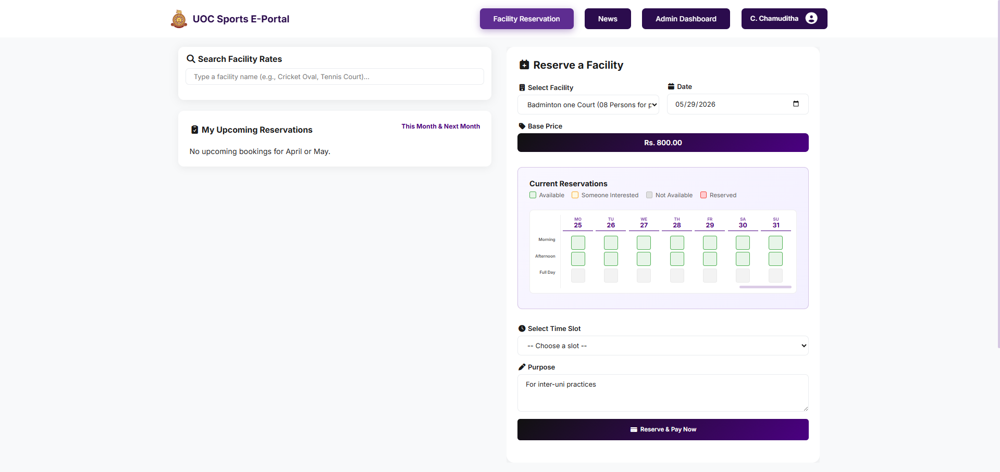
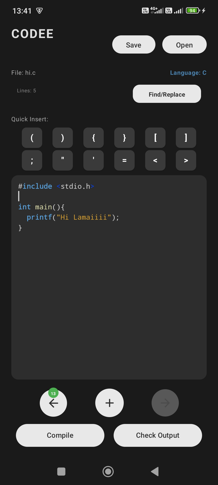
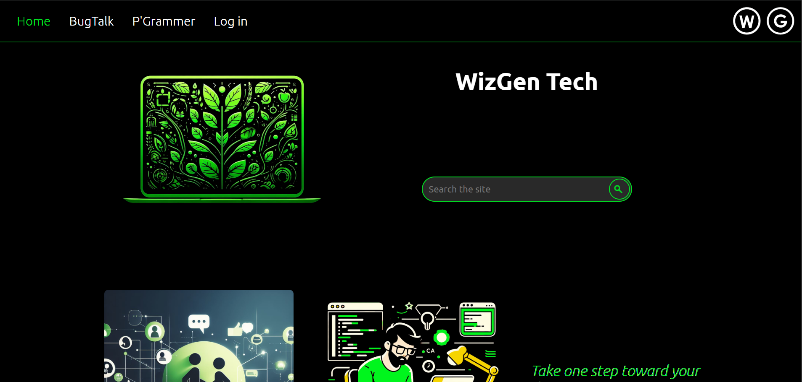

I build systems, ideas, and people. Automation, efficiency, and work that moves things forward.
How I work
— watch the flow —
I'm an Information Systems undergraduate at the University of Colombo School of Computing (UCSC), focused on building solutions that connect technology with real-world impact.
My work spans automation systems, full-stack development, and database design. I enjoy transforming ideas into practical, user-focused software that improves efficiency and experience.
Outside of code, I'm learning new frameworks, contributing to projects, and exploring ideas that challenge the ordinary.
Selected work that I have built

Upload business documents and interact with them naturally. A multi-agent RAG system that retrieves real context from your data and generates dynamic charts — no hallucinations.

Year-long group project for UoC's Physical Education Department — facility reservations, PayHere payments, automated emails, and a full admin dashboard I built from scratch.

A Kotlin Android text editor that compiles and runs code live via ADB — communicating with a Python backend on a connected computer for execution.

First real-world web project post-A/Ls — a content website with SEO, SSL, cPanel hosting, and AdSense monetisation. Built from scratch without any framework.
The journey behind my skills
2026 — Semester 2
This semester shifted toward enterprise thinking, data governance, cloud infrastructure, and user experience design. Subjects included Information Systems Management and Strategy, Data Management and Governance, Applied Data Science, UI/UX Design, and Cloud Infrastructure and Applications.
In Data Management and Governance, analyzed a real company and designed a complete data governance framework around its operations, policies, and data handling processes.
In UI/UX Design, worked on software modernization and experience design projects — focusing on usability, workflows, and how users actually interact with systems rather than just building interfaces.
This semester also marked the completion of the year-long group project: Colombo Sports E-Portal — a full-stack system built for the Physical Education Department of the University of Colombo to manage sports-related activities digitally. I was specifically tasked with building the admin dashboard and third-party API integrations (PayHere payment gateway + Brevo automated emailing). The project gave real exposure to building larger systems with integrations, collaboration, deployment considerations, and handling practical operational requirements.
2026
Completed the IBM RAG and Agentic AI Specialization on Coursera — going deep into retrieval-augmented generation, agentic workflows, orchestration patterns, and how modern AI systems are actually engineered beyond just prompting an LLM.
Alongside the specialization, built PartnerAI — a system where you upload business documents (reports, datasets, PDFs) and interact with them naturally instead of manually digging through files. Rather than hallucinating, the system retrieves relevant context directly from uploaded data before generating responses. It also generates charts dynamically for quick analysis and decision-making.
This was the project where multiple areas I had explored earlier — backend systems, AI, automation, data analysis, and architecture thinking — finally started connecting together into a single coherent system.
2025 — Semester 1
This semester had a more engineering-oriented feel compared to the earlier theory-heavy phases. Subjects included Advanced Data Structures and Algorithms, Object Oriented Programming, Information Systems Security, Mobile Application Design and Development, Business Process Management, and Electronics and Physical Computing.
For the mobile app development subject, built a text editor for Android using Kotlin. The interesting part: it could compile and run code by communicating with a computer through an ADB connection, where a Python backend handled the requests and execution flow.
For Electronics and Physical Computing, built an IoT project using Arduino Uno, ESP32, and multiple sensors — a subject that gave a completely different perspective on how software can interact with the physical world. Systems started becoming more interconnected: software, hardware, networking, and automation all started blending together.
2024 — Semester 2
A heavy mix of systems, theory, networking, databases — and a bit of chaos. Courses included Systems Analysis and Design, Project Management, Database Systems, Computer Networks, DSA, Statistics, and Organizational Behavior.
Learned UML diagrams and system modeling, project management principles, relational database thinking, and data structures and algorithms. In Computer Networks, even built a basic web server from scratch using C — which was one of those moments that made networking feel real and tangible rather than just theoretical.
This was the semester where different parts of computing started visibly connecting to each other.
2024 — Semester 1
Began my Information Systems degree at the University of Colombo School of Computing (UCSC), marking the transition from self-directed learning to formal computer science and systems education. This phase helped strengthen foundational knowledge in software engineering, systems thinking, and collaborative development.
In the Internet & Web Application Development course, built a full-stack web application as coursework — reinforcing frontend-backend integration and basic system design. Also completed a Management Studies project, analyzing a real-world company using strategic frameworks like SWOT, Porter's Five Forces, PEST analysis, Ansoff Matrix, and the 7Ps of Marketing.
While these were academic projects, they reinforced structured thinking, teamwork, and applying technical and business concepts in a formal setting.
2023
During the early self-learning phase, explored networking and IT fundamentals through Cisco Networking Academy, earning multiple badges while learning core concepts related to networking, cybersecurity, and digital infrastructure.
Although still figuring out the exact direction at the time, this exploration helped broaden my understanding of how systems communicate, operate, and are secured — going beyond just software development. Coming from a traditional learning environment, discovering self-paced online learning was a turning point that completely changed how I approached education.
2023
Completed the Machine Learning Specialization by DeepLearning.AI, taught by Andrew Ng. This became the foundation for exploring machine learning and AI systems — and one of the most impactful learning experiences of the self-study phase.
The specialization covered supervised and unsupervised learning, pattern recognition and predictive modeling, model training and evaluation, neural network fundamentals, and practical usage of Scikit-learn, Keras, and TensorFlow. It played a major role in shaping the interest in AI engineering and intelligent systems, while also fundamentally changing the way I approached problem-solving and system design.
2023
During the months after A/Ls, completed multiple professional certificate programs and specializations while exploring different areas of technology and digital systems. This period helped build foundations across programming, cybersecurity, analytics, digital platforms, and problem-solving — while developing the habit of learning independently at a fast pace.
Most of this early learning journey was driven by curiosity rather than a fixed plan — simply diving deeper into whatever technology felt interesting at the time. The ability to explore topics freely, build things hands-on, and learn at my own pace created a level of excitement I had never experienced before in a traditional learning environment.
2023
Started learning web development after A/Ls using pure HTML, CSS, JavaScript, and PHP without frameworks. Built and deployed a content website with the goal of monetising it through Google AdSense — a real-world goal that forced learning how websites actually work end-to-end.
Worked hands-on with cPanel hosting on GoDaddy, SSL setup and free certificates from Let's Encrypt, domain and hosting management, search indexing through Google Search Console, and basic SEO and website optimisation. Although the project was eventually discontinued after university workload increased, it became an important learning experience in understanding how real-world websites are deployed, secured, indexed, and maintained.
Technologies, tools, and theories I work with